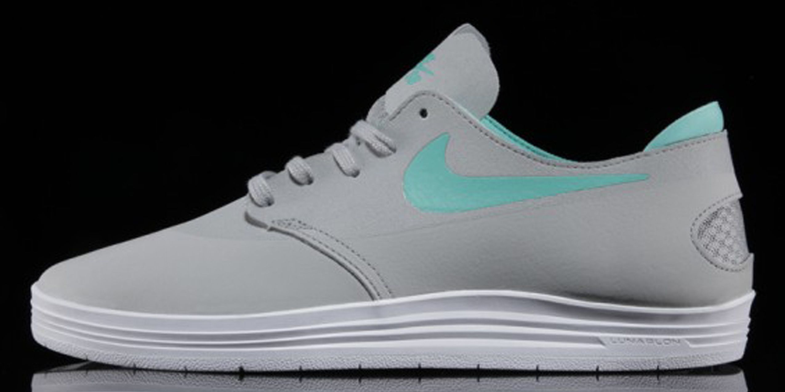
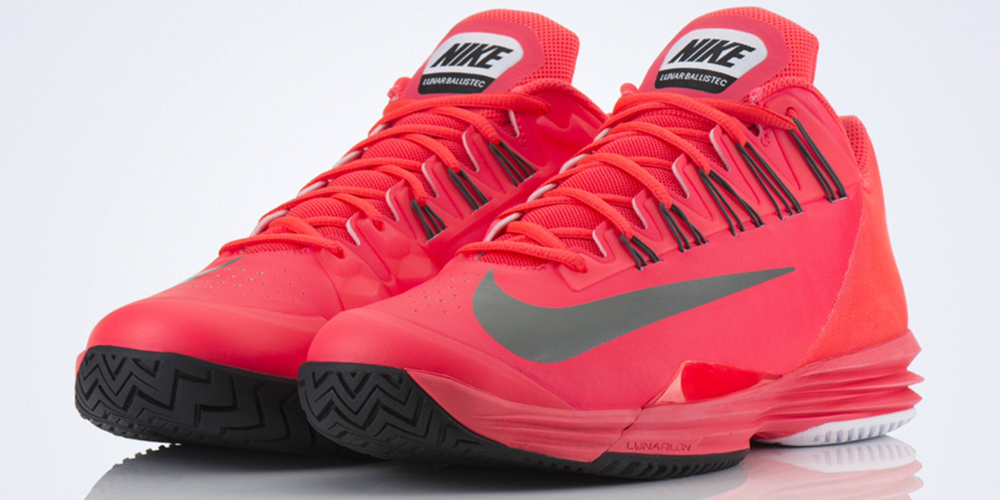
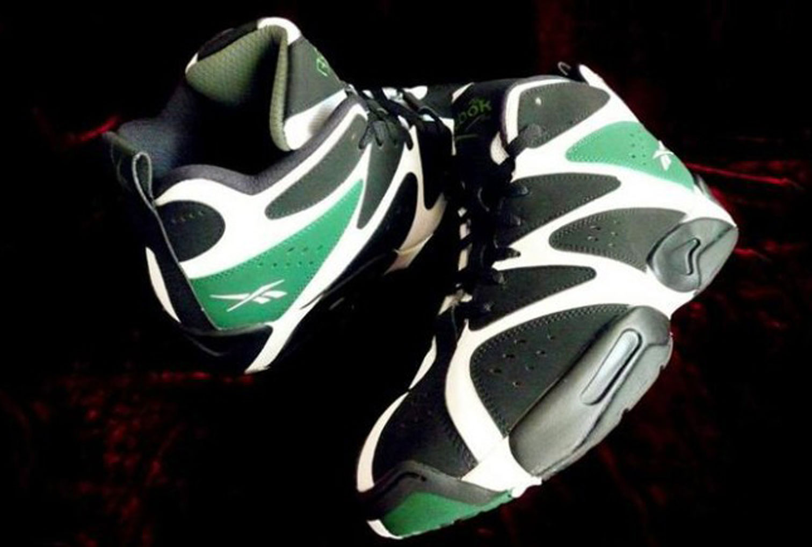

Continuing with shoes designed with Lunarlon technology, the Nike SB Lunar One Shot is a skateboarder’s fantasy. Tagged as “a wolf in sheep’s clothing”, the One Shot is comprised of several components which make it the one of the better skate shoes on the market. The shoe features a padded heel, mesh heel pocket, flexible herringbone outsole, a Hyperscreen traction layer, Lunarlon cushioning, and two-piece construction. Although the shoe comes with a hefty price tag for skatewear (US$110), the One Shot may very well be the future of skateboard sneakers.

The upcoming Lunar Ballistec is a tennis shoe that draws inspiration from the plethora of basketball and football models that Nike has recently released. Designed for optimal quickness on the tennis court, the Ballistec is about half as heavy as a normal shoe, weighing in at 10 ounces flat. The upper portion of the shoe is synthetic leather and mesh material, which also uses flywire technology. The foam core Lunarlon technology forms the full-length midsole, while the stripped outsole is designed using outrigger technology. The Nike Lunar Ballistec is set to launch worldwide on January 2nd at Nike.com.

After the successful retro of the Kamikaze II last year, Reebok is now deciding to bring back the original Kamikaze model that first became popular in the mid-90s. The first colorway of this release will be the “Sonics” model, which is influenced by former Seattle Supersonics star Shawn Kemp and accents a black base with white and dark green counter-blocking. Look for the Kamikaze I to hit Reebok retailers on January 17th for US$115.
